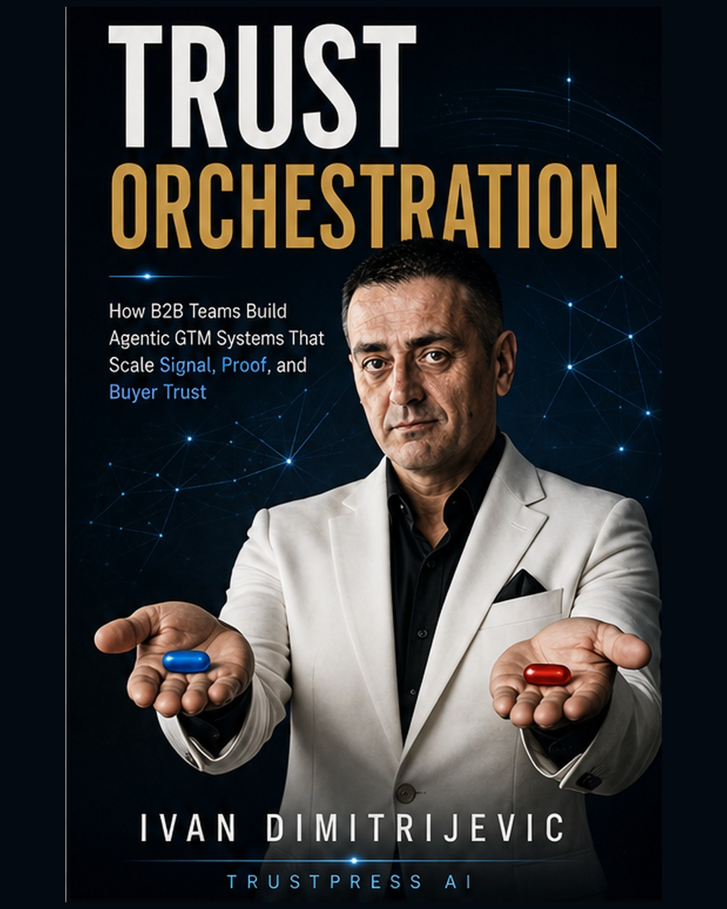

Trust, Shortlist, Pipeline
How B2B Teams Build Market Memory in the AI Era.
A strategic book on trust before demand, market memory, LinkedIn as a public trust surface, AI discovery, proof, long-form authority, and influenced pipeline.
TrustPress AI helps expert founders, consultants, and B2B teams turn scattered expertise into authority assets the market can trust, explain, share, and shortlist.

TrustPress AI has two service tracks: Authority Asset System and Trust-Led GTM System. Both start with diagnosis.
If your expertise is strong but scattered, start with the Authority Asset Audit. Best for books, reports, proof systems, LinkedIn authority assets, and market-memory infrastructure.
If your GTM is about to scale with AI, automation, outbound, or agents, start with the Trust-Led Agentic GTM Audit.
A book will not fix unclear positioning. A report will not create proof that does not exist. More LinkedIn posts will not save a vague offer. The Authority Asset Audit scores your foundation before you invest in the wrong asset.
Most experts already have useful thinking. The problem is that the thinking is scattered, under-structured, under-proven, or disconnected from the offer.
Buyers may like your posts, but still not understand your system. They may know your name, but not know what to trust you for. They may see your activity, but not remember your point of view.
The audit turns raw material, proof, positioning, LinkedIn, voice, visuals, and commercial intent into a clear diagnosis. Then we decide whether to fix, build, publish, or operate.
The score is not a vanity metric. It is a readiness signal. It tells us whether the foundation can carry a serious authority asset.
TrustPress AI sells the right next constraint, not the biggest possible project.
Score the foundation before building the asset.
Fix positioning, offer, proof, message, and trust surface.
Build one flagship authority asset: report, mini-book, proof page, or framework.
Build the book and the authority ecosystem around it.
Keep the asset alive through LinkedIn, newsletter, proof, pages, and sales use.
These assets show the system in action: public books, proof-of-concept books, client authority assets, and flagship category-building systems built to create trust, memory, and commercial clarity.
How B2B Teams Build Market Memory in the AI Era.
A strategic book on trust before demand, market memory, LinkedIn as a public trust surface, AI discovery, proof, long-form authority, and influenced pipeline.

Inside the Mind of Grandmaster
A premium book project exploring chess, decision-making, pressure, psychology, and life lessons from the board.

How Experts Turn Raw Knowledge Into Books, Trust, and Market Memory.
A TrustPress AI proof-of-concept showing how expert knowledge becomes a structured authority asset with stronger trust, clearer positioning, and lasting market memory.

How B2B Teams Stop Chasing Reach and Start Building Market Memory, Shortlist Gravity, and Buyer Confidence.
A free strategic book on LinkedIn, trust, buyer confidence, AI discovery, long-form authority, and building value beyond vanity reach.
How B2B Founders Turn LinkedIn Into Pre-Sales Positioning Infrastructure.
A premium TrustPress AI proof asset showing how strong offline expertise can become a clearer founder authority system online. Built around positioning, proof architecture, profile trust surface, founder authority, and pre-sales positioning infrastructure.

How B2B Teams Build Agentic GTM Systems That Scale Signal, Proof, and Buyer Trust.
A TrustPress AI flagship book on building agentic GTM systems that scale signal, proof, buyer trust, authority assets, warm conversations, and human judgment instead of confusion.
A simple operating model for turning scattered expertise into durable authority assets.
Review the authority foundation: thesis, offer, proof, LinkedIn, archive, memory, and commercial fit.
Decide what should be built next: foundation, asset, book, retainer, or pause.
Turn raw knowledge into a clear, proof-backed authority asset.
Prepare the PDF, page, metadata, launch copy, and sales usage notes.
Use LinkedIn, newsletter, proof, comments, pages, and sales conversations to create market memory.
Want to discuss an Authority Asset Audit, book, flagship report, LinkedIn-driven distribution, or TrustPress AI-style publishing system?
Send a short note with your website, LinkedIn profile, what you sell, who you sell to, and what you want to become known for. We will tell you the most honest next step.
Use the email CTA for audit inquiries. Replace this with a booking link later when your calendar/payment path is ready.
TrustPress AI is built around a simple belief: experts do not need more random content. They need structured authority assets that make their thinking easier to trust, explain, share, and remember.